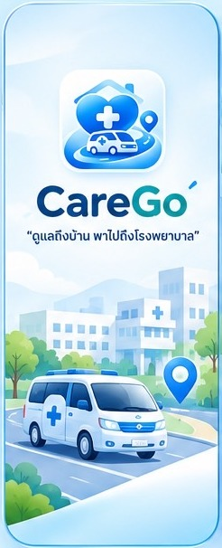
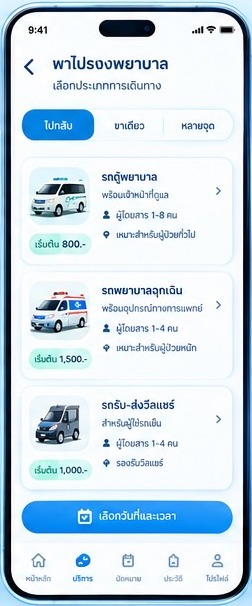
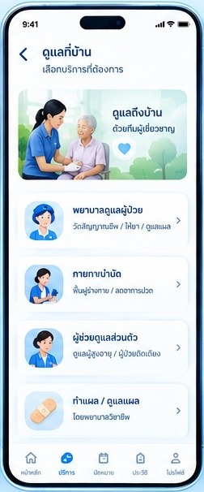

เดินทางลำบาก
ไม่มีรถส่วนตัว ขนส่งสาธารณะไม่สะดวก และไม่มีคนพาไป
CareGo รวมบริการรับ-ส่งไปโรงพยาบาล การดูแลระหว่างเดินทาง และบริการดูแลที่บ้านไว้ในแพลตฟอร์มเดียว ช่วยให้ผู้สูงอายุได้รับการดูแลอย่างปลอดภัย และลูกหลานติดตามสถานะได้ทุกขั้นตอน
ผู้สูงอายุหลายคนเดินทางไปโรงพยาบาลเองไม่ได้ ขณะที่ลูกหลานต้องลางานเพื่อพาไปทุกครั้ง
ไม่มีรถส่วนตัว ขนส่งสาธารณะไม่สะดวก และไม่มีคนพาไป
ใช้เวลาเกือบทั้งวันที่โรงพยาบาล ทั้งที่ร่างกายไม่ไหว
บางรายต้องออกจากงานเพื่อดูแลเต็มเวลา เกิดภาวะเหนื่อยล้าทั้งกายและใจ
ทั้งรถ นัดหมาย ยา และเอกสาร ทำให้ต้องเดินทางซ้ำ
ราคาเริ่มต้นเป็นราคาประเมินเบื้องต้น ทีมงานจะยืนยันรายละเอียดกับคุณอีกครั้งก่อนให้บริการ
รวมการดูแลระหว่างเดินทาง การเดินทางกลับบ้านตามขอบเขตบริการที่ตกลงกัน และเลือกเพิ่มผู้ดูแลในโรงพยาบาล ช่วยยื่นเอกสาร/รับยาแทนได้
การให้บริการด้านสุขภาพดำเนินการโดยบุคลากรที่มีคุณสมบัติและขอบเขตวิชาชีพเหมาะสมกับงานที่รับผิดชอบ
เลือกพาไปโรงพยาบาลหรือดูแลที่บ้าน พร้อมดูราคาประเมินทันที
วัน เวลา สถานที่ และข้อมูลผู้ป่วย เพื่อให้จัดผู้ดูแลที่เหมาะสม
ตรวจสอบและจับคู่กับผู้ให้บริการที่ผ่านการตรวจสอบคุณสมบัติ
ดูความคืบหน้าได้ทุกขั้นตอน ตั้งแต่ออกเดินทาง พบแพทย์ รับยา จนถึงกลับบ้าน
ต่างจากบริการรับ-ส่งทั่วไปที่เน้นเพียงการเดินทาง CareGo ออกแบบมาเพื่อ “ดูแลครบกระบวนการ” ไม่ใช่เพียงการพาไป-กลับ
ปุ่มใหญ่ อ่านง่าย ข้อมูลสำคัญอยู่ในหน้าจอเดียว



“ไม่มีเวลาพาคุณแม่ไปโรงพยาบาลทุกครั้ง เพราะต้องทำงานเต็มเวลา อยากรู้ว่าคุณแม่ปลอดภัยและได้รับความช่วยเหลือตามที่ตกลงไว้ โดยไม่ต้องประสานเองทุกเรื่อง”
ผู้ให้บริการทุกคนผ่านการตรวจสอบคุณสมบัติและประวัติ
ตั้งแต่ออกเดินทาง พบแพทย์ รับยา จนถึงกลับถึงบ้าน
ตรวจสอบประวัติการใช้บริการย้อนหลังได้
ดูแลข้อมูลสุขภาพและข้อมูลติดต่อตาม พ.ร.บ.คุ้มครองข้อมูลส่วนบุคคล พ.ศ. 2562
ระยะแรก (นำร่อง) ให้บริการในพื้นที่อำเภอเมือง จังหวัดขอนแก่น เพื่อประเมินผลการดำเนินงาน จากนั้นจะเพิ่มจำนวนผู้ให้บริการ สร้างความร่วมมือกับโรงพยาบาล คลินิก และชุมชน ก่อนขยายไปจังหวัดใกล้เคียง
จองผ่านเว็บไซต์นี้ได้ทันที ไม่ต้องติดตั้งแอป ใช้เวลาประมาณ 3–5 นาที สำหรับผู้สูงอายุที่ไม่ถนัดใช้เทคโนโลยี ลูกหลานหรือผู้ดูแลสามารถจองแทนได้ และตามแผนของโครงการจะมีเจ้าหน้าที่/เครือข่ายชุมชนช่วยรับจองทางโทรศัพท์ด้วย
ผู้ที่ไม่ใช่ญาติต้องมีหนังสือมอบอำนาจจากผู้ป่วยจึงจะยื่นเอกสารและรับยาแทนได้ หลายครอบครัวยังไม่ทราบขั้นตอนนี้ ทำให้ต้องเดินทางไปซ้ำ ทีมงานจะแจ้งเอกสารที่ต้องเตรียมให้ก่อนวันนัด
หากผู้ป่วยอยู่ในภาวะวิกฤต เช่น หมดสติ หายใจลำบาก เจ็บหน้าอกรุนแรง ให้โทร 1669 ทันที การจองผ่านเว็บไซต์ไม่ใช่ช่องทางแจ้งเหตุฉุกเฉิน
ราคาที่แสดงเป็นราคาประเมินเบื้องต้นจากประเภทบริการ รูปแบบเดินทาง ระยะทาง และบริการเสริม ทีมงานจะยืนยันราคาสุดท้ายกับคุณก่อนให้บริการ
เราให้ความสำคัญกับการคุ้มครองข้อมูลส่วนบุคคล โดยเก็บเท่าที่จำเป็นเพื่อจัดบริการ และขอความยินยอมจากคุณก่อนส่งคำขอทุกครั้ง
จองบริการวันนี้ ทีมงานจะติดต่อกลับเพื่อยืนยันรายละเอียดและจับคู่ผู้ให้บริการที่เหมาะสม